路由器无限重启救砖之旅
路由器无限重启救砖之旅
挖掘路由器漏洞时，发现了一个命令执行漏洞，正好有重启设备的需求，于是通过漏洞传递 reboot 命令重启，没想到的是设备变砖了。分析变砖原因，发现传递的参数会保存 NVRAM 中，开机的时候会读取并执行，于是造成了设备的拒绝服务。手头这个设备也是好不容易淘来的，这可怎么是好。开始救砖吧！
尝试一——恢复记忆
由于 reboot 命令存储到了路由器的 NVRAM 配置中，将路由器恢复出厂设置还原 NVRAM 中的值理论上可行。正好路由器上有 reset 按键，“摁”住它一段时间，测试了好几次没反应。这种方法就不回来。猜测是负责恢复出厂设置程序在设备自动重启之间没有启动。
尝试二——争分夺秒
软的不行来硬的，直接拆。拆了发现预留有串口。通过串口进入系统 shell，与自动重启争分夺秒。希望web服务启动能有点延时，在重启之前，删除 reboot。
1 | nvram set name="" |
输入了用户名密码，还没进入shell 就重启了。这个方法也不行，时间来不及。
尝试三——紧急救援
进入单用户模式，修改启动参数进入单用户模式,U-Boot 没有 saveenv 命令，使用 setenv 修改启动参数后无法保存。这种方法也受阻了，如果能进入单用户模式，可以恢复参数进行救砖。
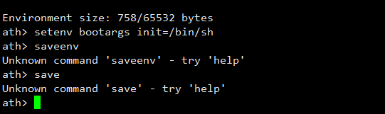
尝试四——内存修改
首先提取出固件定位到问题所在，然后修改好固件后，最后在 U-Boot 中直接刷写。
1. 提取固件
读取内存：Flash 在内存的地址使用命令 bdinfo 查看，。
1 | ath> bdinfo |
Flash 的起始地址为 0x9F000000，大小为 0x01000000（16M）。16M = 16777216 Bit，16777216/32 = 524288=0x80000。启动xshell 的日志记录功能。等待两个小时左右，完成读取。
1 | ath> md 0x9F000000 80000 |
然后把日志中的内容转化为二进制。
1 | import re |
2. 分析固件
binwalk 分析对固件的分析结果。
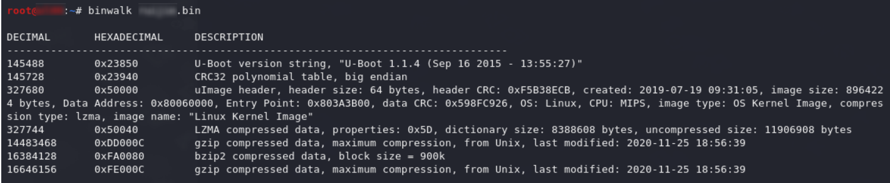
现在手里有串口，当然得参考串口日志信息。根据串口打印的 Flash 中配置分区的信息。
1 | [ 9.465000] Creating 9 MTD partitions on "spi0.0": |
使用 dd 拆分出各模块，下面是可能与 NVRAM 有关的模块。
1 | root@kali#dd if=flash.bin of=config.bin bs=1 count=65535 skip=16646144 |
binwalk 分析出 config 中的内容是经过 gzip压缩的。
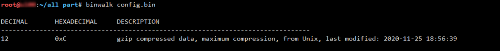
binwalk 提取出配置文件，里面是明文存储着的配置数据。
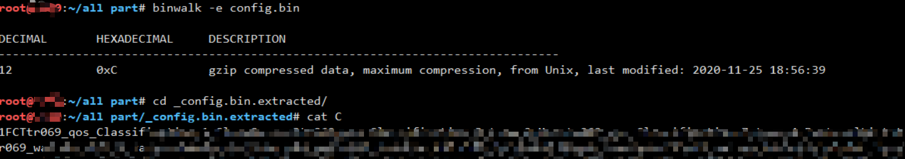
找到了罪魁祸首。
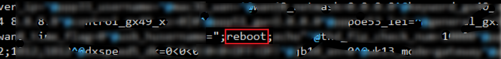
修改好之后，进行压缩。
1 | root@kali:~# gzip C -9 -c > config_m.bin |
最后加上加上分区头，就重构了配置分区，接下来就要想办法写入到 Flash 中。
3. 修改 Flash
搞 IOT 安全的并不是都熟悉嵌入式开发，搞嵌入式开发的不一定理解我们的需求，问了搞嵌入式的朋友他会不会。我是第一次通过 U-Boot 刷写固件，由于缺乏基础知识走了不少弯路，写这篇文章的目的也是帮助有同样需求的人少走弯路。U-Boot 固件刷写不能直接写入到 Flash 中，需要按照下图的流程操作。
1 | graph LR; |
首先尝试用 FTP、loady、loads 上传文件，实际使用时选择一种即可。最后重新刷写配置分区，救活路由器。
1.1) 使用 FTP 上传固件
printenv 命令查看环境变量可知预设服务器的地址为10.10.10.3。

找一根网线连接路由器和电脑，然后给电脑设置静态 IP 地址 10.10.10.3，掩码 255.255.255.0。然后，测试一下连通性。在路由器串口中 ping 电脑。
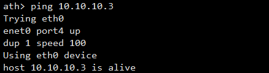
host 10.10.10.3 存活说明连接成功。另外，还准备一个 TFTP 服务器，刚开始用的 FileZilla，不行发现还需要 DHCP 服务器，有找个dhcpsrv ，最后发现还是 TFTPD比较好用。打开就能用，配置也很简单，FTP 设置一下路径，DHCP 需要设置IP等，如下图。
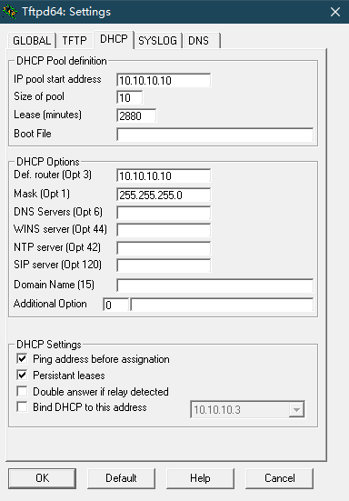
参考环境变量中的la，如果环境变量中没有可以参考的，那就需要在内存中寻找一块足够大的空白区域。
1 | la=tftp 0x80060000 data.bin&&erase 0x9fff0000 +$filesize&&protect off all&&cp.b $fileaddr 0x9fff0000 $filesize |
将固件加载到地址 0x80060000。
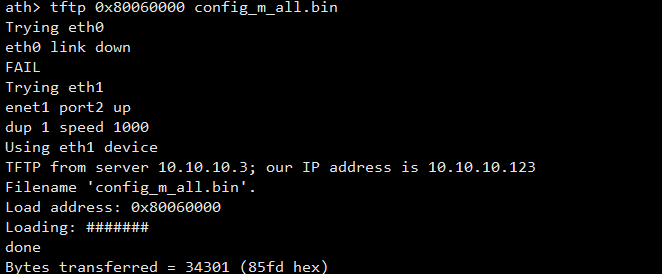
1.2) 使用 loady 上传固件
命令格式为 loady address,然后使用 YMODEM 发送修改后的文件。
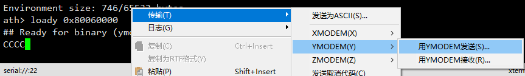
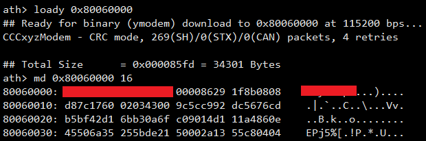
1.3) 使用 loads 上传固件
首先将二进制文件转为S-Record文件。
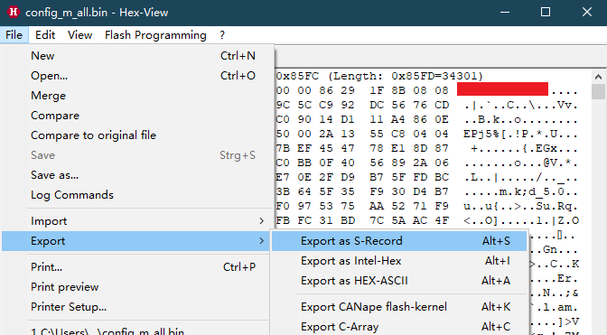
使用默认配置，导出即可。
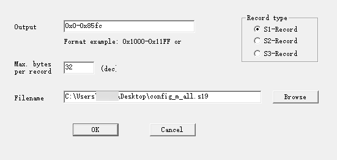
S-Record文件中的数据都是以ASCII码的格式存储，正好使用 Xshell ASCII 字符传输修改后的文件。命令格式为 loads address。
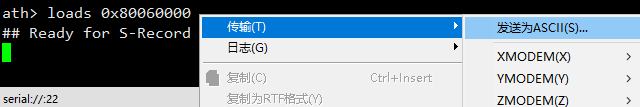
选择文件，等待片刻写入完成。
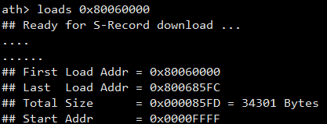
2) 刷写配置分区
刷血配置分区，加载到内存的数据拷贝到 Flash 中。
擦除 Config 分区
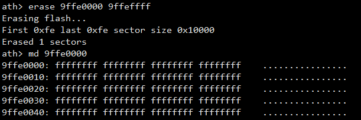
关闭 flash 保护

从Momory 中复制到 Flash 中。
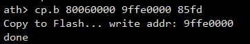
查看写入的数据
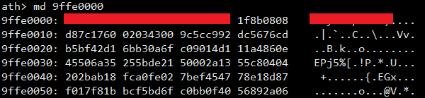
4. 重启
输入 reset 重启，路由器正常运行，救砖成功。
尝试五——物理伤害
除了U-Boot 刷写还可以直接物理操作，使用 FT232H 连接 SOP8 封装的 SPI Flash，用 Flashrom 刷入固件。
压缩修改后的配置文件。
1 | root@kali:~# gzip C -9 -c > config_m.bin |
截取分区头。
1 | root@kali:~# dd if=../config.bin of=header.bin bs=1 count=12 |
计算需要填充的0xFF的大小，然后使用 dd 创建填充块。
1 | root@kali:~# ls -l config_m.bin |
最后，将所有的分区拼接起来形成完整的固件。
1 | root@kali:~# cat header.bin config_m.bin ff.bin > config_new.bin |
以上操作完成了固件的重打包，然后就可以使用 Flashrom 写入新固件。
SOP 夹子夹不稳，只能手扶着。
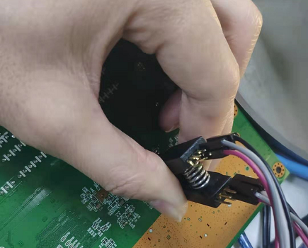
写入时间还是比较长，手有点受不了，可能导致接触不良，写入失败。
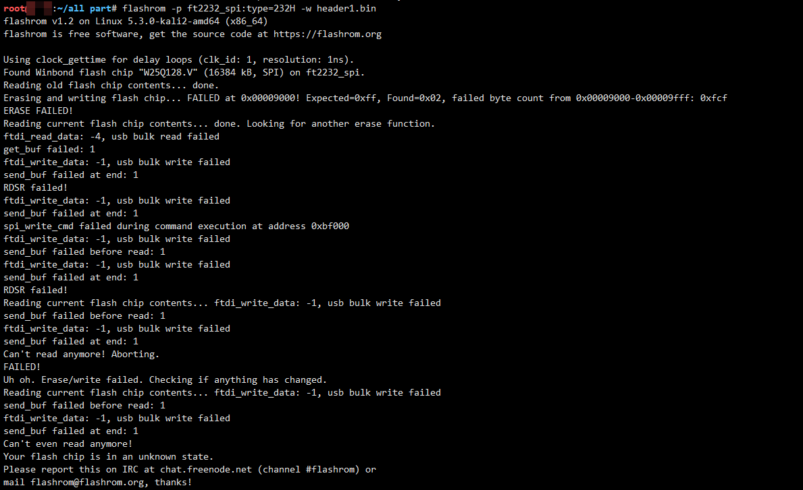
然后，就使用芯片测试夹连接，这样稳一下。
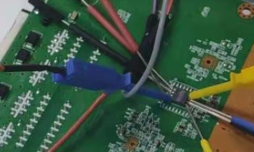
此时写入成功，但是验证失败。
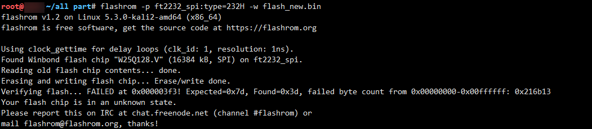
上电，并双手合十，登录界面维持住了，Web 管理端也能访问了，救砖成功。
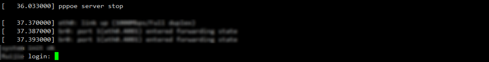
其他方法
除以上 5 种方法，还有更简单粗暴的方法，但需要一个正常的设备，或之前备份过的正常完整 Flash。操作比较简单直接读取正常设备的 Flash 并写入变砖的设备中即可。
总结
救砖，首先需要分析搬砖的原因，然后对症下药。我这次是配置参数引起的，所以我首先想到的是恢复出厂设置，但恢复出厂模式需要长按数秒，此时设备已经重启，这种方法就不行了；然后想到进入 shell 快速还原配置参数修复，结果是还没进入shell，设备就重启了；设备重启是 Web 服务启动时触发，只要不启动 Web 服务设备就不会重启，于是就尝试了一下进入单用户模式，然而 U-Boot中修改后的启动参数却无法保存； 从系统层的修复已经无计可施只能从底层出发，于是对固件进行提取分析，找到问题点修复后重新刷写，刷写尝试了不同的方法，一是通过U-Boot刷写，另外就是直接操作 Flash。
此次救砖还是花了不少时间的，通过实践了解了 NVRAM 的物理存储方式，还尝试了 U-Boot 中多种固件刷写方法。
参考
本文首发于安全客